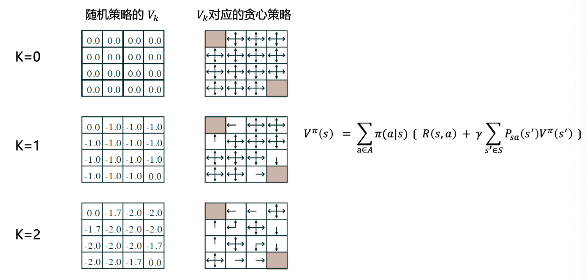
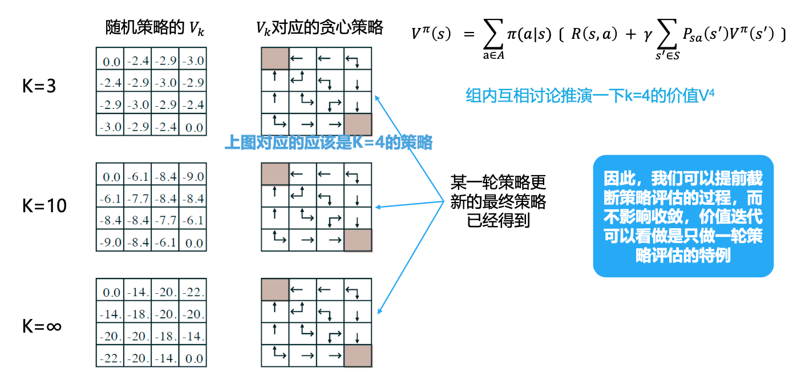
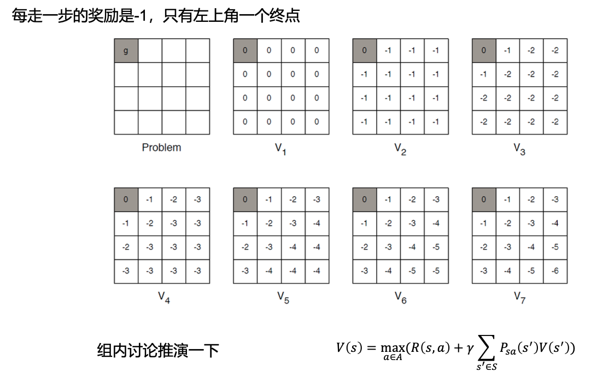
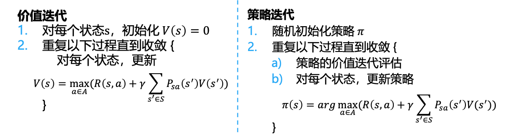

动态规划算法
动态规划算法
基于动态规划的强化学习算法主要有两种:
- 策略迭代(policy iteration)算法
- 策略评估: 使用动态规划来评估策略的状态价值函数
- 策略提升(策略改进)
- 价值迭代(value iteration)算法
- 直接使用贝尔曼最优方程进行动态规划, 直接得到最终的最优状态价值函数
策略迭代方法
基本思路:
- 对于当前策略进行价值评估
\[ V^{\pi} (s) = \sum\limits_{a\in A}\pi(a|s)[R(s,a) + \gamma \sum\limits_{s'\in S}P_{sa}(s')V^{\pi}(s')] \]
- 利用评估后的价值函数更新策略
\[ \pi'(s) = \mathop{\arg\max}\limits_{a}Q^{\pi}(s,a) = \mathop{\arg\max}\limits_{a \in A}(R(s,a) + \gamma \sum\limits_{s'\in S}P_{sa}V^{\pi}(s')) \]
以上公式都是针对于贝尔曼方程的, 不适用于贝尔曼状态动作价值方程.
伪代码:
- 随机初始化策略\(\pi\)
- 重复一下过程直到收敛{
- 策略评估
- 策略提升(策略优化) }
一个例子


假定\(\gamma = 1\)
价值迭代方法
对于一个动作空间和状态空间有限的MDP
\[ |S| < \infty,|A| < \infty \]
伪代码:
- 对于每个状态\(s\), 初始化\(V(s) = 0\)
- 重复一下过程直到收敛{
- 对每个状态, 更新 \(V(s) = \max\limits_{a\in A}(R(s,a) + \gamma \sum\limits_{s' \in S}P_{sa}(s')V_{old}(s'))\) }
可以发现, 以上的计算中没有明确的策略
同步价值迭代 vs 异步价值迭代
- 通过价值迭代会存储两份价值函数的拷贝
- 异步机制函数值存储一份价值函数
一个例子

价值迭代 vs 策略迭代

- 价值迭代是贪心更新法
- 策略迭代中，用Bellman等式更新价值函数代价很大
- 对于空间较小的MDP，策略迭代通常很快收敛
- 对于空间较大的MDP，价值迭代更实用（效率更高）
动态规划的前提: 已知\(P_{sa}(s')\)
All articles in this blog are licensed under CC BY-NC-SA 4.0 unless stating additionally.